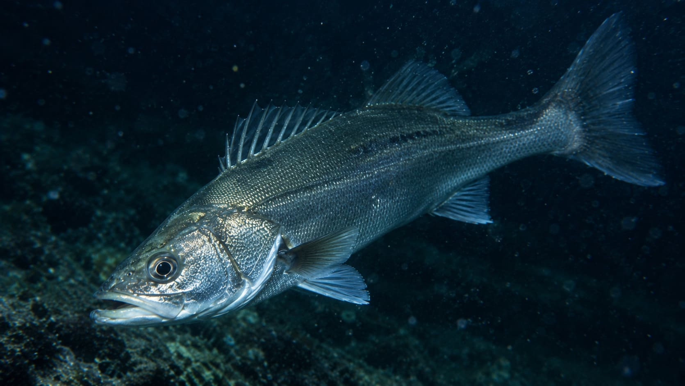
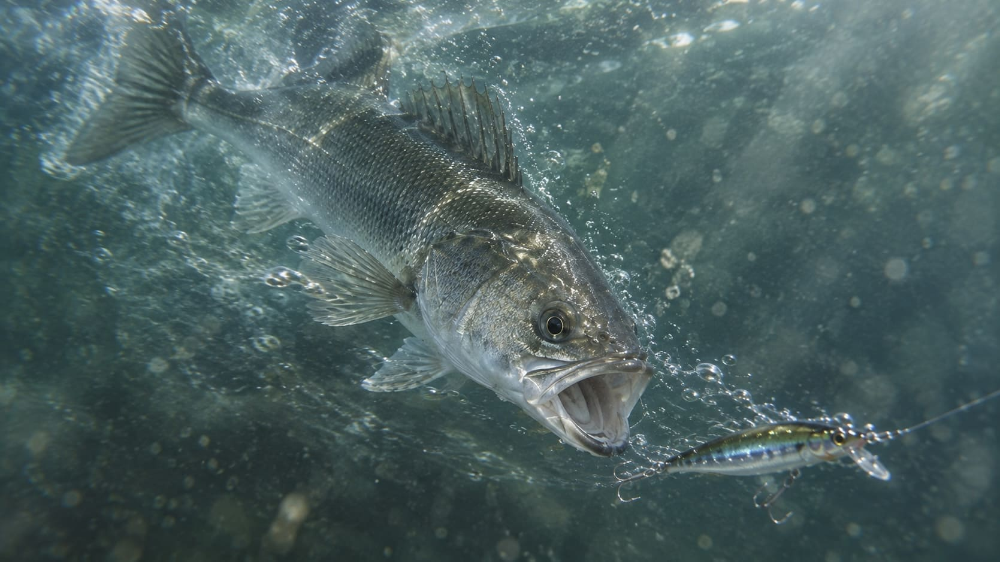

身近な海に潜む銀鱗のハンター。スズキ（シーバス）を仕留めるための総合メソッド

防波堤や河川といった私たちの生活圏に極めて近い水域から、外洋の荒磯まで。あらゆる環境に適応し、時に1メーターを超える巨体へと成長するスズキは、海釣りにおける最高峰のターゲットの一つです。 古くからエサ釣りで親しまれてきたこの魚は、近年「シーバス」の名でルアーフィッシングの一大ジャンルを築き上げました。本記事では、狡猾で獰猛なこのハンターとの知恵比べに勝つためのメソッドを、生態の理解から多様なアプローチまで多角的に紐解いていきます。1. 銀鱗の出世魚。多様な環境を生き抜く強靭な生態
スズキは成長に伴って呼び名が変わる「出世魚」として知られ、古くから日本人の暮らしと密接に関わってきました。
- 成長に応じた呼称：地域によっても異なりますが、一般的には10cm程度の幼魚を「コッパ」、30cm未満を「セイゴ」、30〜60cmの中型を「フッコ（関西ではハネなど）」、そして60cm以上（あるいは70cm以上）に成長したものを「スズキ」と呼びます。地方名としてはマダカやハクラなど、多くの別名が存在します。
- 近縁種と見分け方：日本に生息するスズキの仲間には、外洋の荒波を好む「ヒラスズキ」（房総半島や能登半島以南に分布）や、体に黒い斑点が散らばる「タイリクスズキ」などがいます。
- 偏食と雑食の二面性：豪快に小魚を追い回すフィッシュイーターとしての顔が有名ですが、決して「魚しか食べない」わけではありません。アジやイワシ、ボラの幼魚などの小魚はもちろん、エビやカニといった甲殻類、さらにはイソメやゴカイなどの多毛類まで貪欲に口にする雑食性を持っています。この幅広い食性こそが、ルアーからエサ釣りまで多彩な釣法が成立する理由です。
2. 四季折々の行動パターンを読み解く
スズキは季節の移ろいに合わせてメインとなる獲物（ベイト）を変え、それに伴い狙うべき場所やアプローチも変化します。
- 春の「バチ抜け」：冬の産卵で体力を消耗した魚が浅場へ戻り、活発に捕食を始める季節です。特に、ゴカイ類が水中に浮上する「バチ抜け」のタイミングは、細身のシンキングペンシルなどを水面直下で漂わせる釣りが独壇場となります。
- 夏の「広域回遊」：水温が上がると行動範囲が一気に広がり、イワシやサッパを追って港湾部から河川の内部まで侵入してきます。朝夕のマズメ時や夜間が狙い目となります。
- 秋の「荒食い」：越冬に向けて体力を蓄えるため、最も食欲が旺盛になる大型狙いのベストシーズンです。コノシロや川を下る落ちアユなど、シルエットの大きなベイトを意識した戦略が求められます。
- 冬の「産卵と深場」：大型の個体ほど産卵のために深場へ移動するため、陸っぱりからの難易度は上がります。しかし、潮通しの良い河口の深みなどでは引き続き狙うことが可能です。
3. 居場所を見抜く方程式：「変化」と「明暗」
広大な水面に向かって闇雲に仕掛けを投げても、狡猾なスズキには出会えません。彼らは常に「効率よく獲物を待ち伏せできる場所」に身を潜めています。
- 流れの「ヨレ」を探す：河口などで激しい水流がある場合、スズキは流れのど真ん中を泳ぎ回るような無駄な体力は使いません。激しい本流と、流れの緩い場所がぶつかり合う「境界線（ヨレ）」に陣取り、流されてくる無防備な獲物を待ち構えています。
- 堤防周辺の狙い目：潮通しの良い防波堤の先端や角、漁船の係留場周辺、テトラポッドや消波ブロックの隙間、そして河口域の真水と海水が混ざり合うポイントが有望です。
- 夜の「明暗境界」：ナイトゲームにおいて絶対的な指標となるのが、常夜灯が作り出す光と影です。スズキは明るい場所に集まる小魚を、暗闇の側から虎視眈々と狙い撃ちにします。明かりが消えかかる境界線こそが、最もアツいストライクゾーンとなります。
4. 堤防エサ釣りの極意：電気ウキからご当地の遠投釣法まで
ルアーの印象が強いスズキですが、伝統的なエサ釣りも非常に理にかなった強力なアプローチです。
- 電気ウキで狙う夜の堤防：アオイソメやイワイソメを使ったウキ釣りは、初心者にも親しみやすい釣法です。スズキは比較的水面に近い層を回遊するため、最初は水深1〜2mほどの浅いタナから探り始め、反応がなければ徐々に深くしていくのがセオリーです。
- シモリ玉が生み出す「魅惑の誘い」：夜釣りで大型の電気ウキを使うと、仕掛けを引いてもエサに不自然な動きが伝わりがちです。そこで、ハリスに大きめのシモリ玉をセットすると、それが支点となって仕掛けに柔らかな誘いが掛かり、スズキの食い気を劇的に高めることができます。
- アワセは「一呼吸」置く：スズキのアタリは、ウキが一気に消し込むこともあれば、少し沈んでからモゾモゾと居食いすることもあります。ウキが沈んだ瞬間に慌てて早アワセせず、しっかりと糸フケを取ってから大きく竿をあおるのが確実なフッキングのコツです。
- 地域に根ざした遠投釣法：千葉県外房の大原周辺などでは、沖側の遠浅ポイントへ中通しタイプの遠投ウキを投げ込む夜釣りが盛んです。ステンレス棒を介した仕掛けにイソメを付け、寄せ波に負けないよう常に糸フケを巻き取りながらアタリを待ちます。また、茨城県の河口域では現地で捕まえたザリガニを特効エサとして使う常連の釣り人もいるなど、地域ごとの知恵が息づいています。
- 手軽なチョイ投げ：足元に投げ専用竿やルアーロッドを用い、10〜15号のテンビンに丸セイゴ針を結んでアタリを待つチョイ投げも、堤防からセイゴやフッコを狙う手軽な手段として人気です。
5. 船と堤防の大物狙い：エビエサ釣りと泳がせ釣り
大型を仕留めるための「活きエサ」を使った釣法には、ルアーとは違う独特の緊張感があります。
- 東京湾の風物詩「エビスズキ」：船から活きたエビ（サイマキなど）を使ってスズキを狙う沖釣りです。ここで重要なのは、エビの口からヒューズを巻いた専用針を通し、エビの姿勢が水中で自然になるよう細心の注意を払うことです。船長のアナウンスを聞き、PEラインのマーカーを頼りに「指示ダナ」を寸分違わずキープし続けることが釣果に直結します。
- 堤防最強の「泳がせ釣り」：現地で釣れたアジやイワシを活きたまま針に掛け、海の中へ泳がせてスズキを狙うメソッドです。何よりも「スズキが食いつく前にエサの小魚を殺さないこと」が重要であり、投入時の衝撃を和らげたり、バケツの水をこまめに変えたりする配慮が求められます。置き竿で泳がせのウキを見守りながら、空いた手でルアーを広範囲にキャストする「二刀流」は、堤防を丸ごと攻略する非常に効率的な戦術です。
6. ルアーゲームの要諦：レンジ攻略と自然なアプローチ
シーバスのルアーフィッシングにおいて、「釣れないからルアーの色をコロコロ変える」という行動は罠に陥りやすいパターンです。最優先すべきは、魚がいる「レンジ（深さ）」へルアーを正確に届けることです。

- 主力となる3種の神器：表層から中層を泳ぐ「ミノー」、弱った小魚のように無防備に漂う「シンキングペンシル」、そして底付近や広範囲を強い波動で素早く探る「バイブレーション（およびメタルバイブ）」。堤防や河口では、まずこの3種類を状況に合わせて使い分けるだけで大半のシチュエーションに対応できます。ソフトルアー（ワーム）も食い渋った状況で有効な一手となります。
- ドリフトとボイル撃ち：河口域では、ルアーを強引に巻き取らず、川の流れに乗せて魚の捕食ゾーンへ自然に送り込む「ドリフト」という高等テクニックが威力を発揮します。また、水面で小魚を襲う「ボイル」を発見した際は、そのど真ん中にルアーを叩き込むのではなく、群れの少し先へ着水させて自然に通過させるのが見切られないコツです。
7. 荒波のファイター「ヒラスズキ」に挑む
同じスズキの仲間でも、外洋に面した荒磯を住処とする「ヒラスズキ」は全く次元の違う力強いターゲットです。
- サラシに潜むハンター：彼らのエサ場は、波が岩にぶつかって白く泡立つ「サラシ」の下です。このサラシが広がるタイミングを見計らい、ルアーを正確に撃ち込んで波の中を引いてくるという、ピンポイントのキャスティング技術が要求されます。
- 専用の剛腕タックル：荒れた海と強烈な引きに対抗するため、11〜13フィートのロングロッドに、PE1.5号クラスの太糸と30ポンド以上のフロロリーダーを組み合わせます。ルアーに標準装備されている針では激しいファイト中に伸ばされてしまう危険があるため、強靭な専用フックへの交換が推奨されます。大物を掛けた後は波の満ち引きのリズムに合わせ、陸側へうまくズリ上げるようにして取り込みます。
8. 息を呑む攻防：エラ洗い対策と確実なランディング
ルアーでもエサ釣りでも、スズキとのファイトには共通する最大の試練が待ち受けています。
- 空中の抵抗「エラ洗い」：スズキは針掛かりすると、水面を割って飛び出し、激しく首を振って針を外そうとする「エラ洗い」を行います。この瞬間に糸をガチガチに張っていると、ラインブレイクや針外れの悲劇に見舞われます。竿先を下に向けて魚のジャンプを抑え込みつつ、ロッドの曲がりとリールのドラグ機能を活かして、適度なテンションを保ちながらいなす冷静さが求められます。
- 足元での油断は禁物：堤防でのファイトにおいて、足元まで寄せてからバラしてしまうケースが後を絶ちません。最後の足掻きで急に走り出すことがあるため、水面まで浮かせても決して油断せず、抜き上げによる竿や糸への過負荷を避けるためにも必ずタモ網（玉網）を使用して優しく取り込みましょう。
9. 現場で迷ったときのチェックリストと機動力
広大な防波堤で釣果が上がらない時、同じ場所で100回キャストを繰り返すのは得策ではありません。 スズキ釣りは「魚を探す」ゲームです。ルアーボックスをひっくり返して次々と仕掛けを交換する前に、まずは以下の要素を順番に確認してください。
- ベイト（エサとなる小魚）の気配はあるか？
- 潮は動いているか？
- 狙っているレンジ（深さ）は合っているか？
- 流れのヨレや明暗の境界線を見落としていないか？
これらの条件を満たす場所を求め、堤防の先端、角、常夜灯、テトラ帯などを数投ごとに移動していく「ランガンスタイル」こそが、銀鱗のハンターへと辿り着く最も確実な道標となるはずです。
📍 関東の生息・釣果スポット
※マップ上の赤いドットが釣れるポイントです。